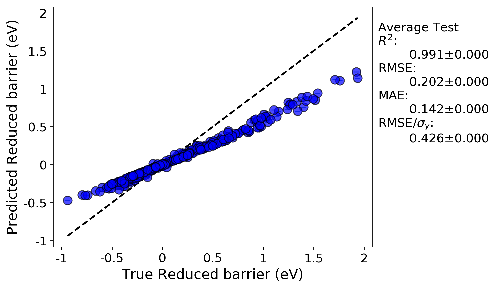
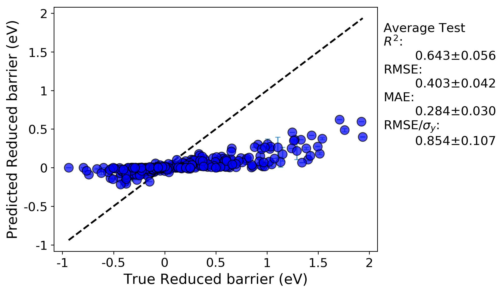

Training and evaluating your first model¶
Now that we have a full X feature matrix that has been normalized appropriately, it is time to train and evaluate your first model. For this tutorial, we will train a Kernel Ridge model with a radial basis function kernel (also known as Gaussian Kernel Ridge Regression, GKRR). We need to add two sections of our input file.
The first is the Models section, which provides a list of model types to train and the associated parameter values for each model. Here, we have chosen values of alpha and gamma equal to 1. There is no reason to think that these are the optimal parameter values, they were simply chosen as an example. Later in this tutorial we will optimize these parameters. Note that if you don’t specify the model parameter values, the values used will be the scikit-learn default values.
The second is the DataSplits section, which controls what types of fits and cross-validation tests will be applied to each specified model. Here, we have chosen “NoSplit”, which is simply a full y versus X fit of the data, without any form of cross-validation. We have also denoted “RepeatedKFold”, which is random leave-out cross-validation test. In this instance, we have 5 splits (so leave out 20%) and do the test two times.
Example:
[Models]
[[KernelRidge]]
kernel = rbf
alpha = 1
gamma = 1
[DataSplits]
[[NoSplit]]
[[RepeatedKFold]]
n_splits = 5
n_repeats = 2
Below is a snapshot of the resulting directory tree generated from this MAST-ML run. You’ll immediately notice the tree is deeper now, with a new level corresponding to each model we’ve fit (here just the single KernelRidge model), and, for each model, folders corresponding to each DataSplit test we denoted in the input file. For each data split method, there are folders and corresponding data plots and files for each hold-out split of the test. For instance, with the RepeatedKFold test, there were 10 total splits, which are labeled as split_0 through split_9. Contained in each folder are numerous files, such as different data parity plots of predicted vs. actual values, histograms of residuals, .csv files for all plotted data, a .pkl file of the exported trained model, and .ipynb Jupyter notebooks useful for custom modifications of the data plots.

Below is a parity plot from the NoSplit (full data fit) run. The R-squared value is high, but there is significant mean error. This suggests that the model parameters are not optimal (which shouldn’t be surprising considering we just picked them arbitrarily).
From examining the parity plot from the RepeatedKFold run (this is the ‘average_points_with_bars.png’ plot), which has the averaged values over all 10 splits, we can see that the predictions from random cross validation result in both a very low R-squared value and a high error. Essentially, cross-validation has shown that this model has no predictive ability. It seems our issues are two-fold: nonoptimal hyperparameters, and over-fitting. The over-fitting is evident due to the much worse before of the cross-validated parity plot compared to the full fit.
